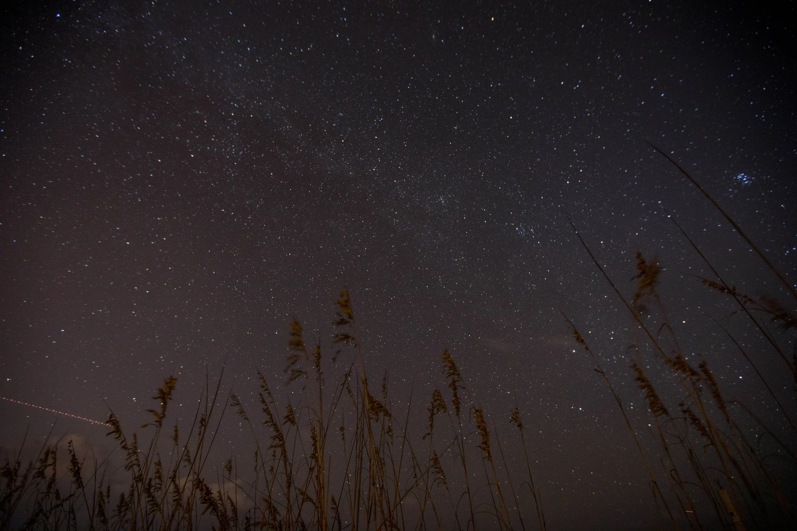

自动识别日期与地点
观星地图
输入你在哪里，今晚什么时候值得抬头、能看到什么，一次说明白。
载入地点…
--
正在获取预报
地点驱动
今晚观星条件
点击地图任意位置即可重算预报
--
/ 100
综合观星指数
计算中
正在综合云量、降水、透明度、月光和你的光污染等级。
- 最佳窗口
- --
- 日落
- --
- 天文黑夜
- --
- 月相 / 月落
- --
日落至凌晨
逐小时预报
当前指标
观星指数 · 分
--
按当晚高度排序
今晚看什么
目标会根据地点、日期、90DX口径与光污染重新排序。
当前目标
选择一个目标
北东
南西
--°
仰角 --
- 最佳时间
- --
- 建议倍率
- --
- 目镜所见
- --
方位角以正北0°、正东90°计算。
影响推荐结果
我的装备
当前按90DX与接近波特尔6级天空推荐。
银河拍摄起始参数
Redmi K90 Pro Max
参数会结合光污染与当晚透明度调整。
Pollinations · AI增强
按需调用
现场观星助手
它会读取当前地点、日期、天气、装备和目标推荐。模型不可用时自动切换本地规则。
等待现场情况。你也可以先选择上面的快捷问题。